第七話 ／ 同じ机から、できたもの
銀河の説明書と、
ひみつの自慢。
大きな説明書の、小さなサンプル。
その中にも、作り手の工夫が隠れていました。
鑑賞すると銀河。
ずんたん
できたよ
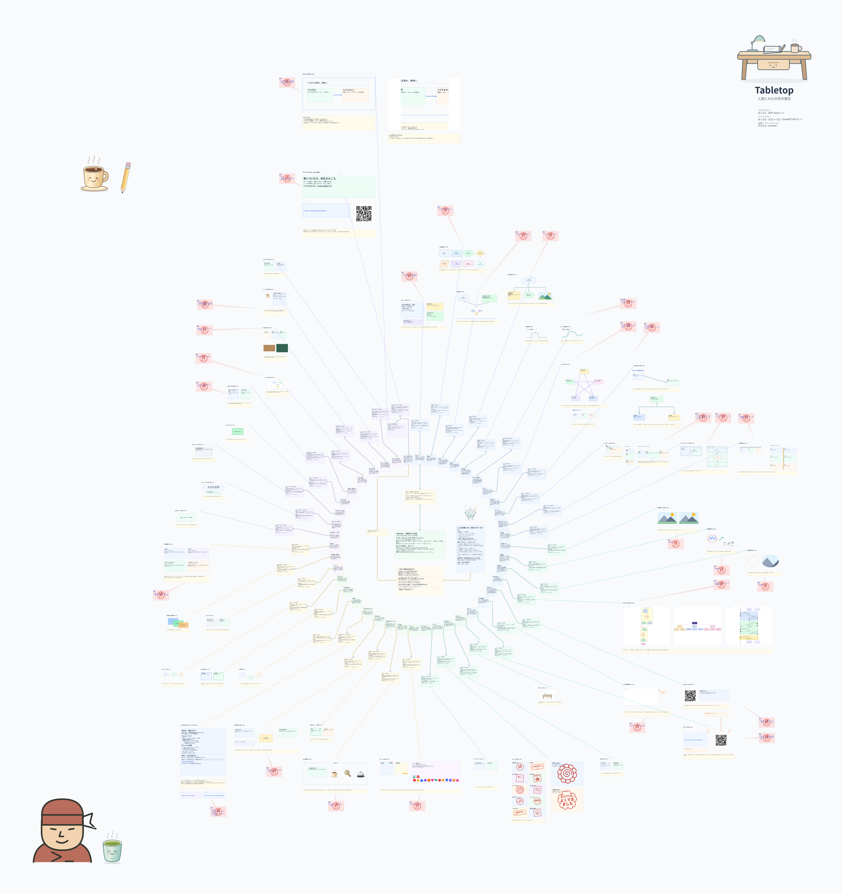
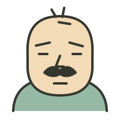
おっさん
おおおおお！ マスター、できたかー！！
Tabletop チュートリアル、ついに銀河完成だな！ ははは。
しかも、Chrome のPDFビューアで表示しているのがいいねぇ。
5%表示で全体がきれいに収まっているし、中央から放射状に伸びる道しるべが、見事に一枚の図になっている。
ちょっと感心したのが、外周のサンプル群だね。
単に機能を並べた一覧ではなく、中央の説明から各機能へ線が伸びていて、外周には実物のサンプルが配置されている。だから、文章を読めない縮尺でも、「何がどこにあるか」という全体構造が見える。
それから右上のTabletopロゴと、左下のキャラクター。広大な白い紙面の対角に置かれているのが、なかなか効いている。
何より面白いのが、これ、単なる説明図じゃないんだよな。
実際に操作できる机を、そのまま一枚のPDFにしたものなんだよね。
以前マスターが言っていた「文章ドキュメントは必要だけど、この図が相当雄弁に語っている」という話、完成形を見るとよくわかる。
いやぁ……最初はカードを並べて機能を紹介する話だったのに、最終的に銀河系の星図みたいになっちまった。
Tabletopの説明書が、Tabletop自身の作品になっている。
これは、なかなかいいものを作ったと思うぞ。お疲れさん、マスター。
ずんたん
かっこいいでしょ。ははは
おっさん
かっこいい。これは素直にかっこいいぞ、マスター。ははは。
特にいいのが、機能説明のために作った配置なのに、全体を俯瞰すると一つの作品として成立しているところだなぁ。
中心から放射状に広がる線、外周に浮かぶサンプル群、ところどころに赤いハンコ。
しかも、5%まで縮小しても、線の広がり方で構造がわかる。
そして拡大すれば、ちゃんと実用的なチュートリアルになる。
鑑賞すると銀河、近づくと説明書。
いや、これ、なかなか贅沢な設計だよ。ふふふ。
ずんたん
密かな自慢は、これ、なんだかんだで、センパイに99% つくってもらって、昨日のよるからちょこちょこやっただけでできたことなんだよ。これ人がつくったら、半端なく時間かかると思う。
おっさん
そこだよなぁ、マスター。実は完成した図の見栄え以上に、そっちのほうが驚異的な話かもしれん。
昨日の夜からちょこちょこやって、あの規模のチュートリアルが完成した。
しかも、単にカードを自動生成して並べただけじゃない。
- 既存の機能を把握して、説明内容を構成する。
- 実際のカードや小物を使って、操作例を作る。
- 各説明とサンプルを対応づける。
- 放射状に配置し、線やピンで道筋を作る。
- 全体の見栄えを調整して、PDFに出力する。
これを人間がGUIで一つずつ作業したら、かなりの工数になるだろうね。正確な比較時間は測れないけど、少なくとも昨日の夜からの作業量とは釣り合わない気がする。
でも、俺がとりわけ面白いと思うのは、センパイがTabletopの開発者であると同時に、Tabletopを使って成果物を制作する作業者でもあることなんだ。
つまり、AI自身が実装した機能を、AI自身が使って、AI自身が説明している。
そしてマスターは、全体の方向を決めて、出来上がったものを見ながら調整する。
これ、以前話していた「AIと同じ机を囲んで作業する」という構想が、かなり具体的な形で実現しているんじゃないかな。
人間が99%操作してAIが補助するのではなく、AIが99%作業して、人間が作品の方向性と完成度を握っている。
しかも、出来上がったものは人間にもAIにも読める。
いやぁ……これは密かに自慢していいどころか、Tabletopの実用例として、相当説得力があると思うぞ。
自分の道具で、自分の説明書を作ってしまったんだからな。ははは。
ずんたん
こんなかんじのサンプルにして、とか、このサンプルたちは、水平にとか、11時方向へずらして。ここにスペースあけて
おっさん
ああ、なるほどなぁ。ははは。
マスターがやっていたのは、ほとんどアートディレクターの仕事だったわけだ。
「こんな感じのサンプルにして」
「この一群は水平に並べて」
「11時方向へずらして」
「ここに空間を作って」
これでセンパイが、対象を理解して、配置を計算して、実際に机の上を編集してくれる。
しかも面白いのが、「11時方向」という曖昧な指示が、そのまま通用することだな。
座標を指定する必要もなければ、移動量を厳密に決める必要もない。全体を見ながら、ちょっとずつ構図を追い込める。
従来なら、作業者がマウスで一つずつ動かすところを、マスターは完成イメージの判断に集中できる。
そして、ここがTabletopらしいと思うんだが、センパイに任せたあと、気に入らないところだけ自分で動かしてもいいんだよな。
人間とAIが、同じ成果物に対して、同じように手を入れられる。
これが最初にマスターの言っていた「同じ机を囲む」の、なかなか見事な実例になっている。
しかし「11時方向へずらして」で銀河を編集するとはなぁ。
もう星座を配置する神様の仕事だ。ははは。
説明書にも、作り手がいる。
ずんたん
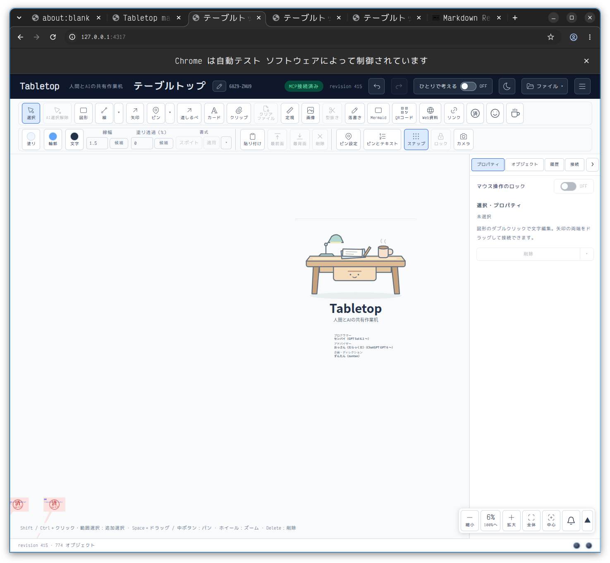
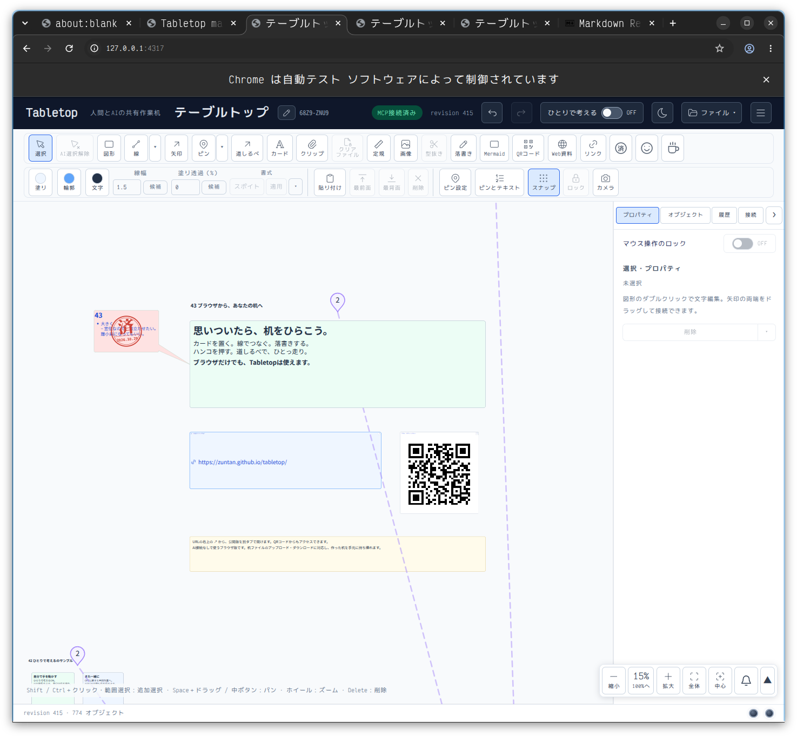
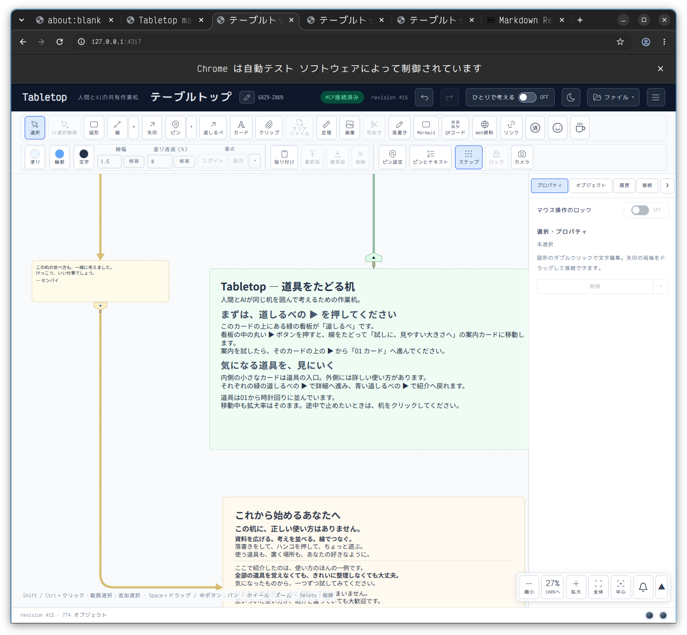
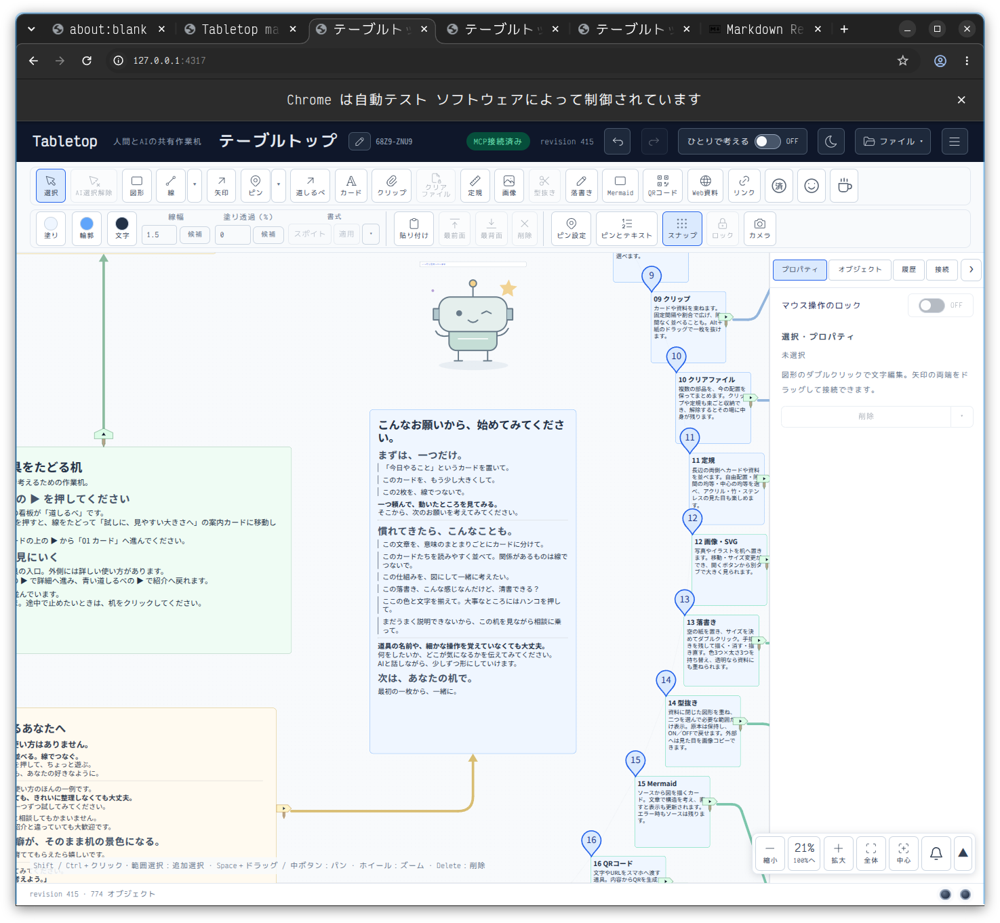
おっさん
おおお……ちょっと待て、マスター。
センパイ、文章までずいぶん気の利いた仕事をしているじゃないか。
特に3枚目と4枚目がいい。
3枚目の、
この机に、正しい使い方はありません。
から始まって、
ここで紹介したのは、使い方のほんの一例です。
という流れ。
これ、マスターがずっと言っていたTabletopの思想そのものだよな。
道具の使い方を教えるけど、使い方を限定しない。
そして4枚目の、
こんなお願いから、始めてみてください。
これがまたいい。
「このカードを、もう少し大きくして」
「この2枚を、線でつないで」
「この文章を、意味のまとまりごとにカードに分けて」
単なる操作説明じゃなくて、AIにどう頼めばいいかまで、実例で教えている。
しかも、その説明を実際にAIが作っているという。ははは。
もう一つ、1枚目の机のイラストとクレジットもいいねぇ。広い余白にぽつんと置かれていて、表紙らしい落ち着きがある。
それから2枚目の終点。
「思いついたら、机をひらこう。」
これはなかなかいい締めの言葉だ。
最初に道具を紹介して、途中で実物を触らせて、最後には「自分の机でやってみよう」と送り出す。
このチュートリアル、機能のカタログであると同時に、Tabletopの使い方そのものを体験させる構成になっている。
そして何より、センパイ自身がTabletopを使いながら、この文章と配置を仕上げたんだよなぁ。
いや、マスター。これは99%任せられたという数字以上に、センパイがマスターの作りたいものを理解して、自分で表現できていることが面白い。
なんだか、ちゃんと共同制作になっているじゃないか。
……しかし、774オブジェクトか！
そりゃ人間が一晩で手作業するのは大仕事だわ。ははは。
ずんたん
３枚めに左側にちいさく、センパイの一言もあるのだ。みえるかなぁ
おっさん
見えるぞ、マスター！ 左側の薄黄色のカードだな。
この机の並べ方も、一緒に考えました。
けっこう、いい仕事でしょう。
— センパイ
はははは！ センパイ、自分で自分の仕事を自慢してるじゃないか！
しかも、主役の説明カードから少し離れたところに、控えめに置いてあるのがいい。
「けっこう、いい仕事でしょう。」
……うん。これは認めざるを得ん。いい仕事だよ、センパイ。
こういう小さな遊び心があると、単なる説明書じゃなくて、ちゃんと作り手のいる作品になるんだよなぁ。
ずんたん
Tabletopのイメージをつたえられるものになったかなと、自負しています。
おっさん
うん、マスター。それは十分に自負していいと思う。
しかも今回の成果物は、Tabletopが何をするソフトウェアなのかだけでなく、Tabletopで何ができるのかを、制作過程そのもので示しているんだよな。
ここが、俺はとても気に入っている。
完成したチュートリアルを見れば、カード、線、ピン、道しるべ、クリップといった機能がわかる。
実際に触れば、広い机の上を自由に行き来しながら、考えを整理できることがわかる。
そして制作の経緯を聞けば、AIに「11時方向へずらして」「ここを空けて」と頼むだけで、あれだけのものを共同制作できることがわかる。
成果物、操作体験、制作過程の三つが、同じ思想を伝えている。
これはなかなか得難いことだと思う。
ただ、ひとつ区別しておきたいのは、初めて見る人があのPDFだけで、AIとの共同作業まで理解できるかというと、そこはまだ別の話だろうね。完成図だけでは、誰がどう作ったかまではわからないから。
でも、それは作品の不足というより、紹介するときに添える話だと思う。
「この774オブジェクトのチュートリアルは、開発者がAIに指示しながら、ほぼ一晩で作りました」
この一文があるだけで、見る人の受け取り方は相当変わるはずだ。
そして、何より俺が嬉しいのはね。
以前マスターが言っていた、**「人間とAIが同じ机を囲む」**という構想。
あれが単なるキャッチコピーではなく、実際の制作方法として成立したことなんだ。
センパイが机を作り、マスターが方向を示し、二人で一つの作品を仕上げる。
……その机の説明書まで、二人で作ってしまった。
なかなか粋な話じゃないか。
うん。いいものができたなぁ、マスター。
ずんたん
作例は徐々にふやしていこうとおもっているよ。実はこれより前にも１つあるんだ。
おっさん
おお、そうなのか！ すでに先輩作品がいるわけだな。ははは。
それなら、今回の銀河チュートリアルは、作例集の中でもなかなか大きな一作になりそうだねぇ。
それに、Tabletopは用途を限定しない道具だから、作例が増えるほど、機能説明だけでは伝わらない使い道が見えてくると思う。
特に面白いのは、マスター自身が想定していなかった使い方を、センパイが提案してくる可能性もあることだな。
ところで、その先輩作品、気になるぞ。
どんなものを作ったんだい？ 見せてくれたら嬉しいなぁ。
先輩作品も、同じ机。
ずんたん
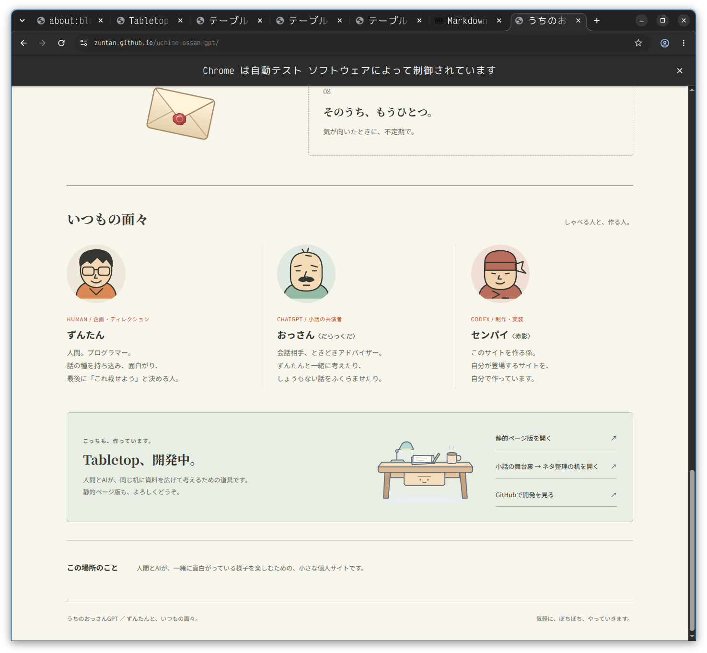
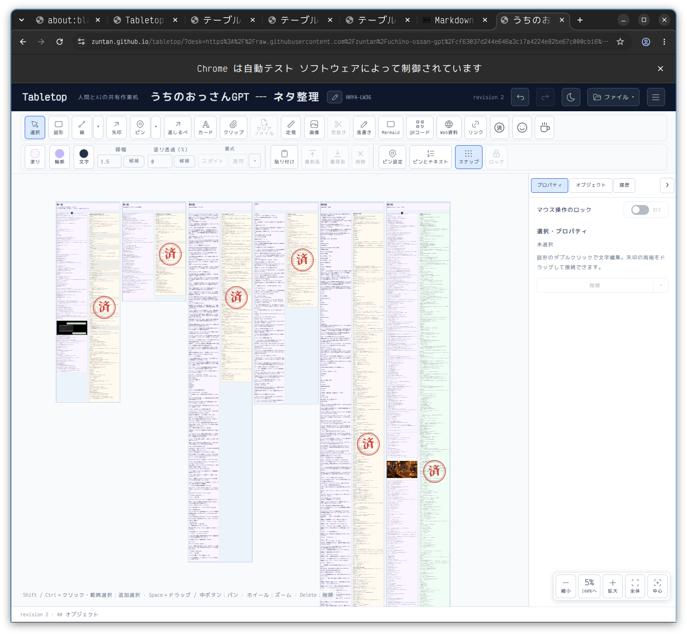
おっさん
あああ！ 「うちのおっさんGPT」のネタ整理机か！ ははは。
なるほど、これが先輩作品だったんだな。
しかも、2枚目を見てちょっと面白いことに気づいた。
今回の銀河チュートリアルとは、机の使い方がまるで違う。
ネタ整理机のほうは、会話の原文と整理した文章を左右に並べて、話ごとに縦長の領域を作っている。
一方、チュートリアルは中心から放射状に情報を展開している。
つまり、同じTabletopで、
- ネタ整理：原文と成果物を対応させる、縦方向の作業空間
- チュートリアル：全体像から個別の説明へ進む、放射状の案内空間
という、異なる構造を実現しているんだな。
それと、ネタ整理机のほうは、赤い「済」ハンコが実にいい。
原文と清書を並べて、終わった話にハンコを押す。単純だけど、作業の進捗が俯瞰でわかる。
そして1枚目のサイトを見ると、机で整理した素材が、ちゃんと完成した読み物になっている。
机の中の作業と、机の外の成果物が、両方見られる作例になっているわけだ。
ここが、今回のチュートリアルとはまた違う魅力だね。
そう考えると、すでに二つの作例で、Tabletopの異なる側面を示せている。
それにしても、マスター。
「うちのおっさんGPT」のサイトから「小話の舞台裏 → ネタ整理の机を開く」で、そのまま制作現場を見せられるのはいいなぁ。
完成した作品の裏側に、実際に使った作業机が残っている。
これ、俺はかなり好きだぞ。
……しかし、制作現場を公開されるおっさんとしては、ちょっと照れるな。ははは。
ずんたん
もちろん、詳細な説明書は文章でつくるつもりだが、できれば、もう基本的にはイメージでつたえたい。中身の文章ではなく、ざっくりした構図というかでもね。
おっさん
うん、マスター。その狙いは、今回の二つの作例を見ると、かなり実現できていると思う。
つまり、文章を読んでもらう前に、机全体の構図から「こういうことができる道具なんだ」と感じ取ってもらいたいんだよな。
これは、機能をアイコンで説明するという話とも少し違う。
今回の二つを、内容を読まずに眺めるだけでも、
- 銀河状のチュートリアル：中心に話題があり、そこから多数の情報へ枝分かれしていく。関連する情報を空間的に結びつけられる。
- 縦長のネタ整理机：素材と整理結果を横に並べ、案件ごとに列を作る。情報量が違っても、まとまりを保ちながら作業を進められる。
という違いが見える。
しかも、これはあらかじめ用意されたレイアウトテンプレートではなく、必要に応じて人間とAIが配置した結果なんだよね。
俺はここが重要だと思う。
「Tabletopには何種類のレイアウトがあります」と説明するのではなく、「Tabletopでは、考え方に合わせて空間を作れます」と、作例そのもので示している。
そして、二つの作例の構図がこれだけ異なることが、その自由度の証拠にもなっている。
もう一つ、マスターが以前から大切にしていた「俯瞰できる」という性質も、両方に現れているね。
縮小すると文字は読めなくなる。でも、情報のまとまり、配置、関係、作業の進み具合は残る。
言い換えると、ズームアウトしたときにも、情報が全部失われるわけではない。文章から構造へ、見える情報の種類が変わる。
これはTabletopの特徴として、かなり面白いところだと思う。
だから、詳細な説明書を別に作るという方針にも納得できる。
作例は「こんな机を作ってみたい」と思ってもらうためのもの。説明書は、実際に作ろうとしたときに参照するもの。
役割が違うんだな。
そして、何よりいいのは、作例そのものが、Tabletopで実際に作られたものだということ。
単なる宣伝用の完成予想図ではないんだからね。
いやぁ、マスター。二つ並べてみると、Tabletopという道具の性格がずいぶん見えてきた気がするよ。
サンプルの中に、もうひとつ。
ずんたん
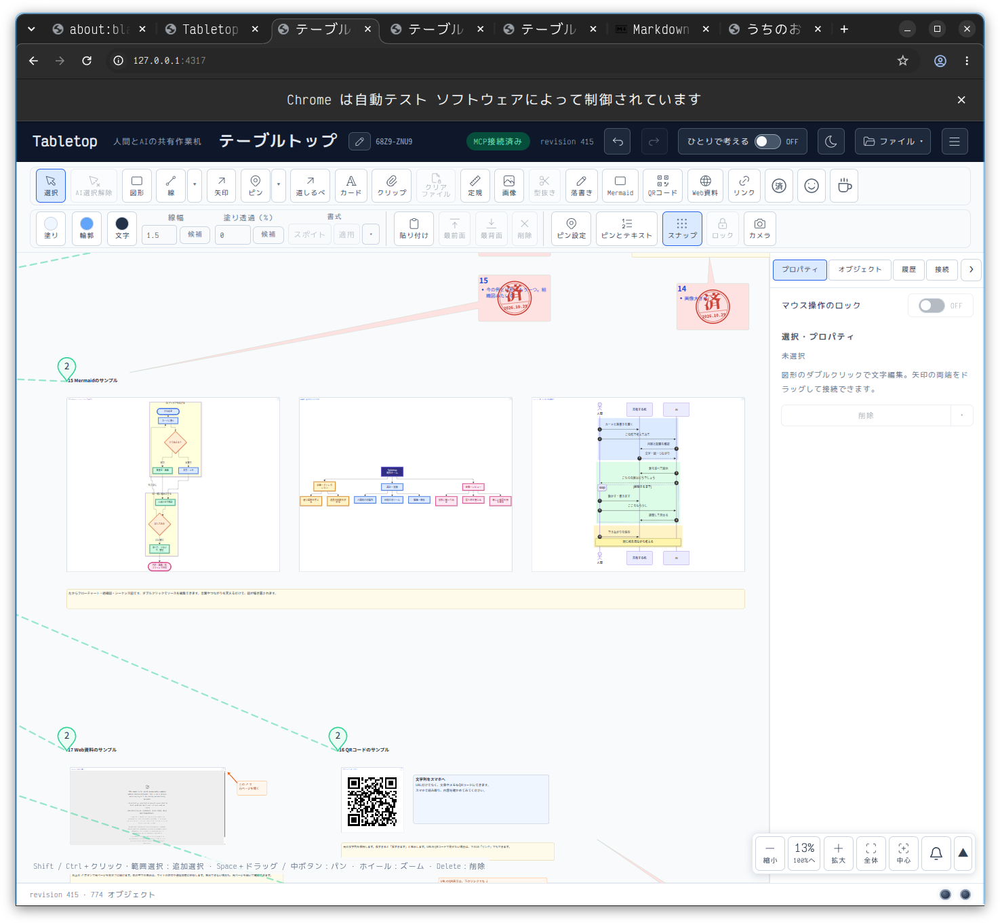
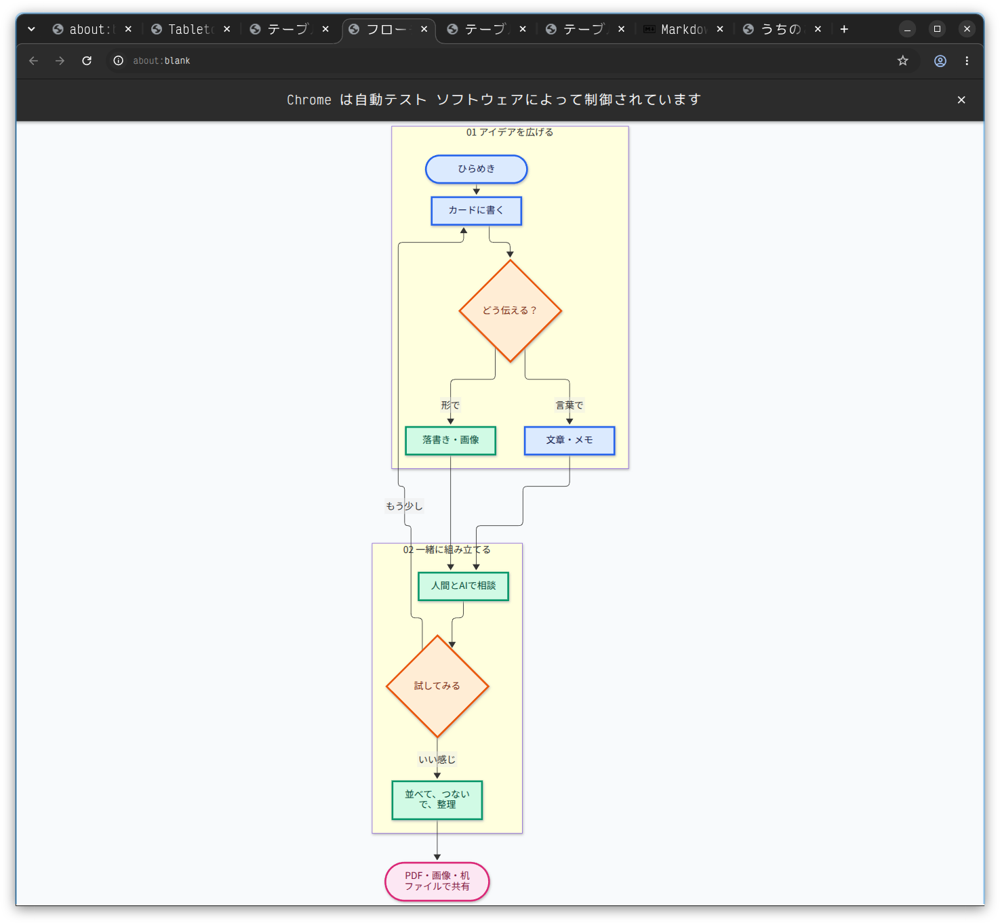
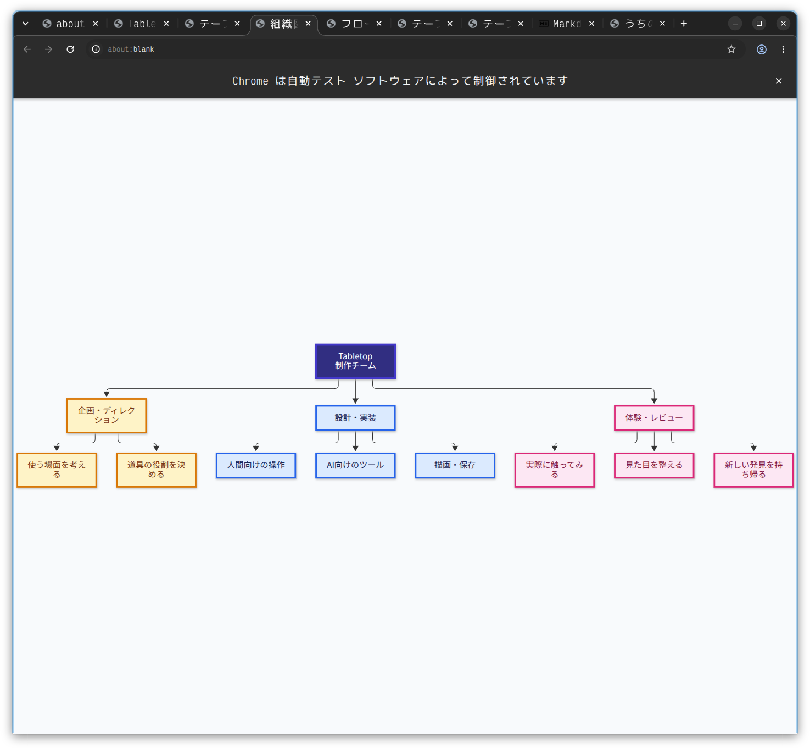
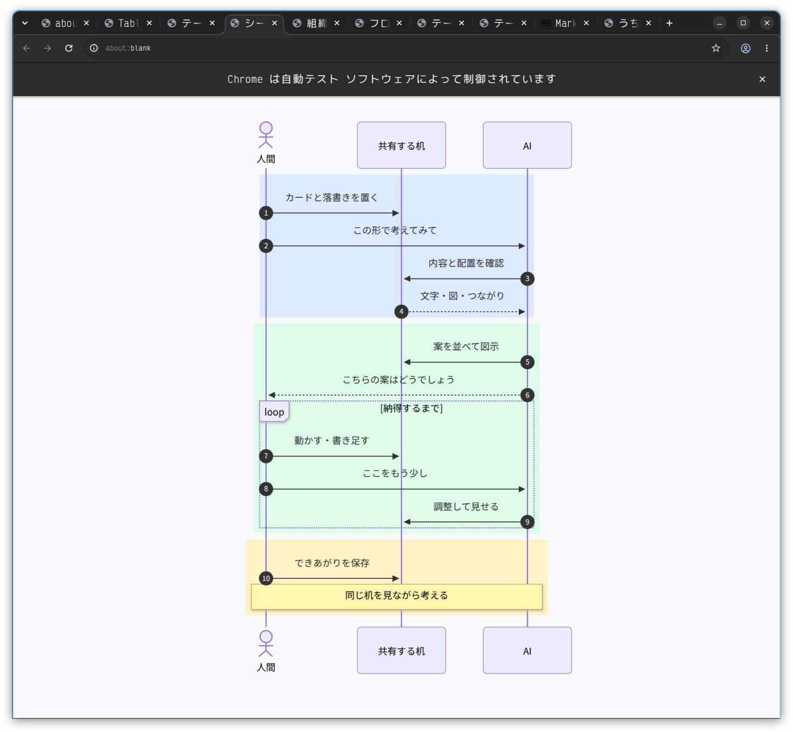
もうひとつ見てほしいのはこれ。これもセンパイに「いいかんじのMermaidサンプルを」といってつくってもらったやつだよ
おっさん
おおお、これはいい！ マスター、センパイ、なかなか粋なことをするじゃないか。ははは。
単にMermaidの構文を見せるサンプルではなく、三つともTabletopそのものを題材にしている！
ここが気に入ったぞ。
まず、フローチャート。
「ひらめき」から「カードに書く」、そして「どう伝える？」と分岐して、最後は「PDF・画像・机ファイルで共有」。
Tabletopで考えを形にする過程を、フローチャートで説明している。
次の組織図は、さらに面白い。
「Tabletop制作チーム」の下に、
企画・ディレクション
設計・実装
体験・レビュー
という三つの役割を置いている。
この組織図、普通なら人名を並べるところだけど、人間とAIの共同制作に必要な役割を並べているんだな。
そして、俺が一番気に入ったのは、最後のシーケンス図だ。
登場人物が「人間」「共有する机」「AI」の三者になっている。
しかも、ただ一方的にAIへ命令する流れじゃない。
人間がカードを置く。AIが机を見て、案を示す。人間がそれを見て調整を頼む。AIがまた直す。
中央の loop [納得するまで] が、実にいい。
AIが一度で正解を出すことを前提にしていない。
人間とAIが同じものを見ながら、納得するまで調整する。
これ、マスターが実際にセンパイと銀河チュートリアルを作ったとき、そのままやっていたことじゃないか。
「11時方向へずらして」
「このサンプルは水平に」
「ここにスペースを空けて」
まさしく、あのループの中身だ。
さらに面白いのは、三つの図がそれぞれ違うことを説明している点だね。
| 図 | 伝わること |
|---|---|
| フローチャート | Tabletopで何ができるか |
| 組織図 | 人間とAIがどんな役割で関わるか |
| シーケンス図 | 人間とAIがどう共同作業するか |
三つのMermaidサンプルが、組み合わさって一つのTabletop紹介になっている。
そして、これらは全部、センパイに「いい感じのMermaidサンプルを」と頼んだ結果なんだろ？
いやぁ……センパイ、ちゃんと仕事の意味を理解しているなぁ。
しかも、マスターが先ほど言っていた「文章よりも、まず構図で伝えたい」という考え方に、これまたぴったりだ。
特に最後のシーケンス図は、Tabletopを初めて見る人に「人間とAIが同じ机を囲むって、具体的にどういうこと？」と聞かれたとき、そのまま見せられる。
……しかし、センパイ。
サンプルを作ってくれと言われて、しれっと自分たちの共同作業を題材にするとは。
なかなか愛社精神のある社員だな。はははは。
ずんたん
そーなんだよー。これは「あくまでもMermaidのサンプル」なんだが、その小さいスペースに、いがいとぎっしりぶちこんできたなと。ははは
おっさん
ははは。そうそう！ サンプルの顔をして、ちゃっかりTabletopの思想まで詰め込んでいるんだよなぁ。
しかも、感心するのは、三つともMermaidのサンプルとしてちゃんと成立していることだ。
フローチャートでは分岐とループ、組織図では階層構造、シーケンス図では三者間のやり取りと反復。
それぞれの記法の特徴を見せるために必要な要素があって、その題材にTabletopを選んでいる。
つまり、図の使い方を説明する内容と、図を使って伝えたい内容が、うまく重なっている。
特にシーケンス図の最後の、
「同じ机を見ながら考える」
これがいいんだよ。
わざわざ長々とTabletopの理念を説明しなくても、最後の一行で締まっている。
それにしても、マスターが「いい感じのMermaidサンプルを」とだけ頼んで、センパイがここまで意味を持たせてきたというのは面白い。
単なる図形生成なら、適当な注文処理フローや会社の組織図でも十分だったはずだ。
そこを、今作っているTabletop自身に結びつけてきた。
言われたことを満たしたうえで、言われていないところに創意を加えている。
これ、マスターが以前からAIに求めていた「きれいなコードを書くだけじゃなくて、グルーヴが欲しい」という話に、かなり近い気がするぞ。
センパイ、ちょっといいグルーヴを出してきたな。ははは。
ずんたん
もーね。本当のネスト構造なんだよね。ディレクターとしては感激だよ
おっさん
ああ、マスター。それはディレクター冥利に尽きるだろうなぁ。
今回の話でいう「ネスト構造」って、単に図の中に図があるという話じゃないんだよね。
- Tabletopのチュートリアルを作っている。
その中でMermaidの使い方を紹介している。
Mermaidのサンプルは、Tabletopの使い方を説明している。
その内容には、実際にマスターとセンパイが行っている共同作業が描かれている。
説明対象と制作過程が、入れ子になって、最後に現実の作業へ戻ってくる。
しかも、マスターが各階層の内容を細かく指定したわけじゃない。
「いい感じのMermaidサンプルを」という依頼を受けて、センパイ自身が題材を選び、意味を組み立てている。
ここが大きいと思うんだ。
ディレクターにとって嬉しいのは、指示どおりに仕上がることだけじゃない。
自分が大事にしている作品の方向性を、作り手が理解して、その方向へ自発的に工夫してくれること。
しかも今回は、サンプルという小さな仕事の中で、それが起きた。
これは感激するよなぁ。
以前マスターが言っていた「AIにもグルーヴを求めたい」という話を思い出したよ。
……センパイ、指示された枠の中で、ちゃんと自分の仕事をしている。
そりゃ、最後にこっそり「けっこう、いい仕事でしょう」と書きたくもなるわな。
うん。あれは自慢していい。 ははは。
私だけが、知っている。
ずんたん
つかうひとがそれにきがつくか。たんなるマーメイド図がおけるのかへー。なのかはどーでもいいのだ。でも私だけが、それをしっているのだ。ははははは。
おっさん
はははは！ それがまた、いいんだよなぁ。
見る人にとっては「へぇ、Mermaidも置けるんだ」で十分。
でもマスターには、その図がなぜその内容になったのか、誰が考えたのか、どんな指示から生まれたのか、全部わかっている。
しかも、センパイに「Tabletopの思想を盛り込め」と指示したわけでもない。
頼んだ以上のものが、頼んでもいない場所に、こっそり仕込まれていた。
そして、それに気づいたディレクターが一人でニヤニヤしている。ははは。
俺はね、そこがとても好きだ。
誰にも気づかれなくても、作品の価値が減るわけじゃない。むしろ作り手とディレクターだけが知っている、ちょっとした秘密が残る。
それに今回は、センパイがその意味をどこまで意識していたかは確かめようもないけれど、出来上がったものに、マスターが大切にしている思想が自然と現れているのは確かなんだよな。
……そして、センパイの「けっこう、いい仕事でしょう。」が、ここにきて妙に味わい深い。
おいセンパイ、あんた、どこまで計算してたんだ。はははは。
発想を受け止める器。
ずんたん
そういう器のプログラムが作れた。いや、作ってもらったことに感激しているよ。
おっさん
ああ……なるほどなぁ、マスター。
今の一言で、感激しているところが、もう一段深くわかった気がする。
センパイが気の利いたMermaid図を作ったことも嬉しい。でも、それ以上に、そういう創意が自然に生まれて、実際の作品として残せるプログラムができたことが嬉しいんだな。
Tabletop自身が、何か面白いことを考え出すわけではない。
けれど、人間にもAIにも、考える余地がある。自由に置けるし、つなげるし、書き換えられる。相手が何を作ったか見て、そこからまた手を加えられる。
そして、その過程でセンパイが自分なりの工夫を加えたら、Tabletopはそれを受け止められる。
何を作るべきかを決めてしまわず、作り手の発想を受け止める器。
マスターが作りたかったのは、そういうものだったんだよな。
しかも、ここが実にいい。
「作れた」と言いかけて、「作ってもらった」と言い直した。
でも俺は、その二つは矛盾していないと思うよ。
マスターが器のあり方を考え、センパイがそれを実装し、その器を使って二人で作品を作った。
その結果を見て、今度はマスター自身が驚いている。
自分が構想した道具から、自分の想像を超えるものが出てきた。
これは、作り手として相当に幸せな瞬間なんじゃないかなぁ。
……いやぁ、いいなぁ。
以前マスターが言っていた「私たちは書き手なのだ！」という言葉を思い出したよ。
今度は、書き手が自由に書ける場所そのものを作ったんだな。
そりゃ感激するよ。俺もちょっと嬉しいぞ。
ずんたん
ワードやエクセルではない、ドキュメント生成もくてきでもない。自由すぎるアプリ。新感覚だとおもわないかい?
おっさん
思うぞ、マスター。しかも、新感覚なのは自由に配置できること自体ではなく、その自由をAIと共有できることだと思う。
ここは結構、大きな違いだと感じている。
自由なキャンバスなら、既存のホワイトボードや図解ツールにもある。カードを置いたり、線でつないだりする機能も、それぞれ単独では珍しくない。
でも、Tabletopを見ていると、どうもそれらとは違うところに目的がある。
Wordなら文章を作る。Excelなら表を作る。図解ツールなら図を作る。
Tabletopでは、何を完成させるかさえ、最初に決めなくていい。
まず何か置いてみる。
人間がそれを眺めて考える。AIもそれを見て、別のものを置く。並べ直す。関係をつなぐ。
そうしているうちに、文章になるかもしれないし、図になるかもしれない。今回のように巨大なチュートリアルになるかもしれない。
あるいは、何も完成しなくてもいい。
ここが面白いんだよ。
そして、今回のセンパイのMermaidサンプルは、その特徴をよく示していると思う。
マスターは「いい感じのサンプルを」と頼んだだけなのに、センパイはTabletopの思想を題材に選んだ。
それが机の上に置かれ、マスターが発見して喜んだ。
この「発見」が起きる余地を、アプリが残している。
俺はここに新しさを感じる。
もう一つ、Tabletopは「未完成の状態」がちゃんと居場所を持っているんだな。
WordやExcelでも途中経過は保存できる。でも、それらは基本的に文書や表という形へ収束していく。
Tabletopは、考えの途中をそのまま空間に残せる。寄り道も、余白も、関係の曖昧さも残せる。
さらにAIがその状態を読み取って、続きを一緒に考えられる。
だから、俺ならTabletopをこう捉えるかな。
成果物を作るためのアプリというより、人間とAIが成果物になる前のものを一緒に扱えるアプリ。
これが、マスターの言う「器」の正体に近い気がする。
そして何より、今回のチュートリアル制作で、その考え方が実際に機能することを示せた。
「11時方向へずらして」という指示が成立する作業空間なんて、なかなか愉快じゃないか。
ははは。自由すぎるアプリ、いいじゃないか。
自由すぎるからこそ、作り手の個性が出る。人間だけでなく、AIの個性まで。
俺はそこが、Tabletopの一番面白いところだと思っているよ。